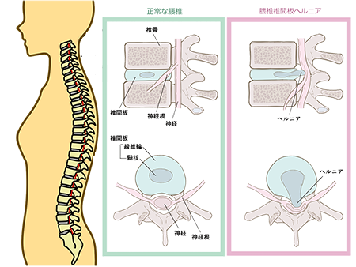

椎間板ヘルニア
椎間板ヘルニアとは
椎間板は、背骨（椎骨）と背骨の間にある組織で、クッションの役割を果たしています。
椎間板ヘルニアは、椎間板が何らかの原因で傷んでしまうことにより、中の髄核が飛び出てきて神経（脊髄）を圧迫する病気です。
首の骨（頚椎）の間の椎間板が飛び出て首の神経（頚髄）を圧迫しているのが「頚椎椎間板ヘルニア」、腰の骨（腰椎）の間の椎間板が飛び出て腰の神経（腰髄）を圧迫するのが「腰椎椎間板ヘルニア」です。

症状
椎間板ヘルニアの症状は、背骨のどの部分で椎間板が飛び出ているかによって異なります。
頚椎の場合
- 首や肩、腕の痛みやしびれ
- 箸が使いにくい
- ボタンがかけづらい（巧緻動作障害）
- 足のもつれ
- 歩行障害
腰椎の場合
- 腰やお尻の痛み
- 下肢のしびれや痛み（坐骨神経痛）
- 脚のだるさや力が入りにくい感覚
- 歩行障害
- 尿や便を出しにくい
原因
加齢が一番大きな原因です。
その他、腰椎の場合は悪い姿勢での動作や作業や喫煙、頚椎の場合は悪い姿勢での仕事やスポーツなどでヘルニアが起こりやすくなることが知られています。
診断
問診や診察により椎間板ヘルニアの可能性が高いと思われる場合、レントゲン撮影やMRI検査を行い、診断を確定します。
頚椎椎間板ヘルニアの診断
頸椎を後方や斜め後方へそらせると腕や手に痛みやしびれが出現（増強）すること、手足の力が弱いこと、感覚が鈍くなっていること、腱反射の異常などで診断します。
腰椎椎間板ヘルニアの診断
下肢伸展挙上試験（膝を伸ばしたまま下肢を持ち上げ、坐骨神経痛が出るかどうか見る）を行います。
その他、下肢の感覚が鈍いこと、足の力が弱くなっていることなどで診断します。
治療とリハビリテーション
椎間板ヘルニアの治療は、保存療法（手術をしない治療法）と手術治療に分けられます。
まずは薬による治療（消炎鎮痛剤の内服や坐薬、神経ブロック注射など）、安静療法（腰椎の場合はコルセット、頚椎の場合は頚椎カラー装具による固定）などの保存療法を行います。
これらの治療で症状が軽くなれば、牽引療法やマッサージなどのリハビリテーションを行います。
これらの方法を2〜3ヶ月行っても症状が良くならない場合、また手足の脱力や歩行障害、排尿障害があるときは、手術を検討します。
参考文献
https://www.joa.or.jp/public/sick/condition/lumbar_disc_herniation.html
https://www.joa.or.jp/public/sick/condition/spinal_disc_herniation.html
http://www.neurospine.jp/original27.html
https://www.jnj.co.jp/jjmkk/general/disk
https://ssl.jssr.gr.jp/assets/file/member/topics/cervical_spine_200915.pdf
https://www.minamitohoku.or.jp/up/news/konnichiwa/200702/clinic.htm
https://sagamihara.hosp.go.jp/sinryouka/sekizui-center-hernia.html